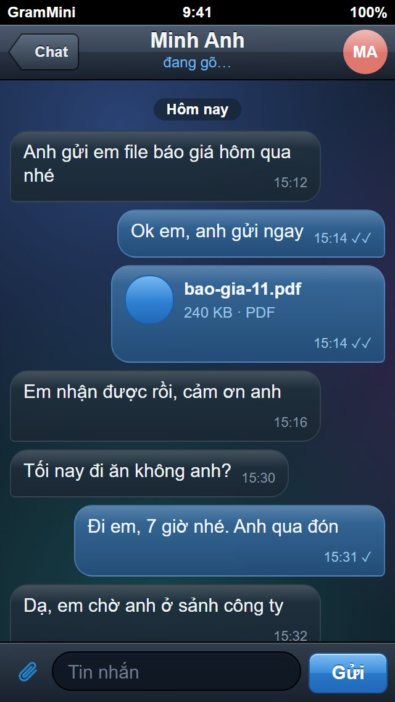
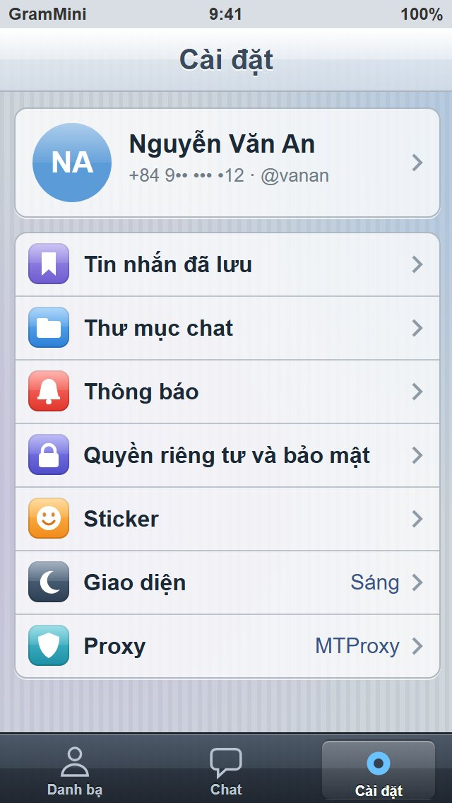

GramMini
Telegram cho iPhone / iPad chạy iOS 5 và iOS 6 đã jailbreak — giao diện kiểu iOS 26, nhẹ, có MTProxy.
Gọi thoại, gọi video, phòng thoại nhóm, Stories, chat bí mật — gọi được với app Telegram chính thức.
Bản 2.0.4Nguồn Cydia: https://itovn.github.io/GramMini/cydia/
Mới trong bản 2.0
Gọi videoGọi video 1-1 với người dùng Telegram trên mọi máy; bật / tắt camera, đổi camera trước / sau giữa cuộc gọi. Máy không có camera (iPad 1) vẫn xem được hình bên kia.
Phòng thoại nhóm, quản lý nhómMở / vào phòng thoại của nhóm, kênh: nghe, nói, thấy ai đang nói. Thêm thành viên (danh bạ hoặc @tên), cấp quyền quản trị, đổi tên / mô tả, link mời.
Chat bí mậtMã hoá đầu-cuối như app chính thức (đối chiếu mã khoá), tin tự huỷ sau khi xem; gửi / nhận ảnh, video, tệp, tin nhắn thoại — mỗi tệp một khoá riêng; thông báo khi app ở nền mà không lộ nội dung.
StoriesDải stories ở đầu danh sách chat: xem story ảnh / video của người và kênh mình theo dõi, thả ♥, trả lời; đăng story ảnh / video, xem ai đã xem.
Giao diện
 Danh sách chat, thư mục
Danh sách chat, thư mục Màn chat
Màn chat
Chế độ tối
Cài đặtẢnh minh hoạ với dữ liệu mẫu.
Tính năng
Chat đủ kiểuChat riêng, nhóm, kênh: chữ có định dạng (đậm, nghiêng, link, chữ ẩn…), trả lời, chuyển tiếp, sửa; xoá cho cả hai bên hoặc chỉ ở máy mình; ảnh, video (tự nén; video H.265 quay bằng máy mới tự chuyển để có hình), tệp từ máy, tin thoại; lưu ảnh / video vào máy. Emoji mới (cả cờ Việt Nam) hiện đúng dù máy cũ không có.
Gọi thoại, gọi videoGọi 1-1 với người dùng Telegram trên mọi máy — gọi thoại và gọi video (camera trước / sau): mã hoá đầu-cuối (4 emoji khoá), loa ngoài, tắt micro, chuông khi có cuộc gọi đến, giữ cuộc gọi khi mở app khác; danh sách cuộc gọi gần đây. Cuộc gọi đến hiện ngay trên màn khoá («trượt để trả lời»). Phòng thoại nhóm: mở phòng, nghe, nói, thấy ai đang nói. Chạy được cả trên máy yếu (iPad 1).
Sticker, GIF, StoriesXem và đăng stories; Sticker động (TGS) và sticker video (WebM) chạy ngay trong chat; bộ sticker như app gốc: xem bộ, thêm / gỡ, bộ nổi bật, tìm bộ; GIF tự chạy.
Thư mục chat, chủ đề, nhómĐồng bộ với tài khoản Telegram; nhóm có chủ đề (forum) xem / gửi theo từng chủ đề; tìm chat, người, tin nhắn; danh bạ, tạo nhóm và quản lý nhóm (thêm / xoá thành viên, quản trị viên, link mời). Nháp đồng bộ với máy khác; bình luận của bài kênh.
Cảm xúc, bình chọn, botThả cảm xúc, bình chọn / câu đố, thanh tin ghim; nút bấm, bàn phím và nút «Menu» của bot; link t.me mở ngay trong app, tham gia nhóm / kênh.
Tiện íchNhắc hẹn / hẹn giờ gửi, tin nhắn nhanh (gõ «/»), vị trí trên bản đồ, mã QR chuyển khoản VietQR, danh thiếp.
iPad chia đôiDanh sách chat bên trái, cuộc trò chuyện bên phải, như app Tin nhắn.
MTProxy, SOCKS5Dùng được khi nhà mạng chặn Telegram (MTProxy thường, dd, ee fake-TLS).
Thông báo tin mớiKhi app ở nền hay đã treo; số chưa đọc trên biểu tượng; tắt tiếng từng chat.
Riêng tưChat bí mật mã hoá đầu-cuối (tin tự huỷ sau khi xem, ảnh / tệp mã hoá bằng khoá riêng); khoá app bằng mật mã; tin tự xoá (1 ngày / 1 tuần / 1 tháng); quyền riêng tư, phiên đăng nhập; phiên chỉ nằm trên máy, không qua server nào khác. Đăng nhập bằng mã QR (quét bằng điện thoại khác). Nhiều tài khoản; tệp phiên được mã hoá bằng khoá trong Keychain.
Sáng / tốiGiao diện iOS 6 kết hợp hiệu ứng kính trong; chế độ tối, tự đổi theo giờ.
Tự cập nhậtApp tự báo bản mới, tải, kiểm chữ ký, cài rồi tự khởi động lại màn hình chính. Bị vuốt tắt vẫn tự chạy lại ở nền để không lỡ tin / cuộc gọi.
Cài đặt
1. Thêm nguồn CydiaMở Cydia → Nguồn → Sửa → Thêm, nhập
https://itovn.github.io/GramMini/cydia/ (hoặc chạm nút «Thêm nguồn vào Cydia» ở trên).2. Cài GramMiniTìm «GramMini» → Cài đặt → Xác nhận. Xong bấm «Restart SpringBoard» (để có thông báo tin mới).
3. Đăng nhậpMở GramMini, nhập số điện thoại, mã Telegram gửi về (và mật khẩu 2 lớp nếu có). Mạng chặn Telegram thì chạm «Proxy» để dán link MTProxy.
Các bản sau tự cập nhật trong app (Cài đặt → Phiên bản: kiểm ngay).
Máy chạy được
iOS 5.0 – 6.1.x đã jailbreak (cần MobileSubstrate): iPhone 4, 4S, 5 · iPad 1, 2, 3, 4, mini 1 · iPod touch 4, 5. Đã thử trên iPhone 5 (iOS 6.1.4), iPad 4 và iPad mini 1 (iOS 6.1.3), iPad 1 (iOS 5.1.1). Gọi video cần A5 trở lên để gửi hình; iPad 1 (A4) chỉ xem.
Mã nguồn
Mã nguồn mở — GPL-3.0github.com/itovn/GramMini · lõi Rust (MTProto, thư viện grammers), giao diện Objective-C / UIKit.
GramMini là ứng dụng không chính thức, dùng Telegram API; không phải sản phẩm của Telegram.
Hỏi đáp, báo lỗi: nhóm Telegram t.me/tivikit
Hỏi đáp, báo lỗi: nhóm Telegram t.me/tivikit